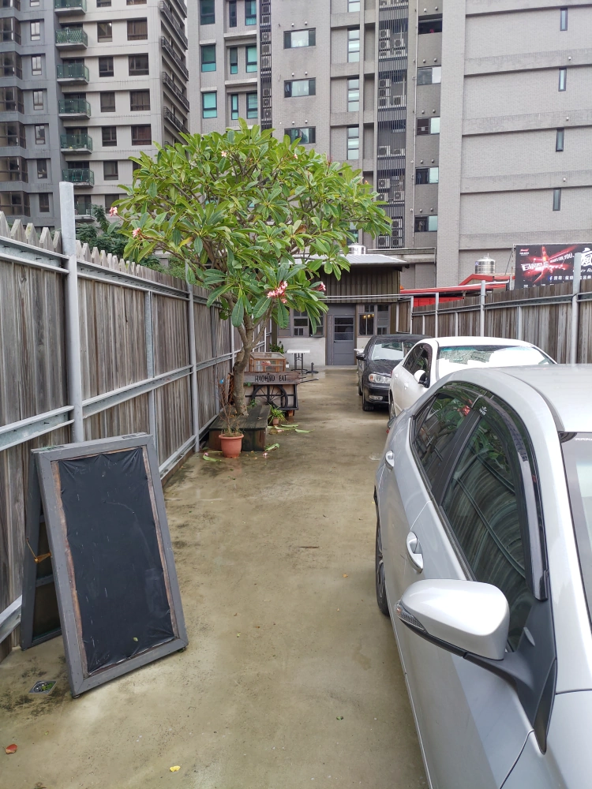
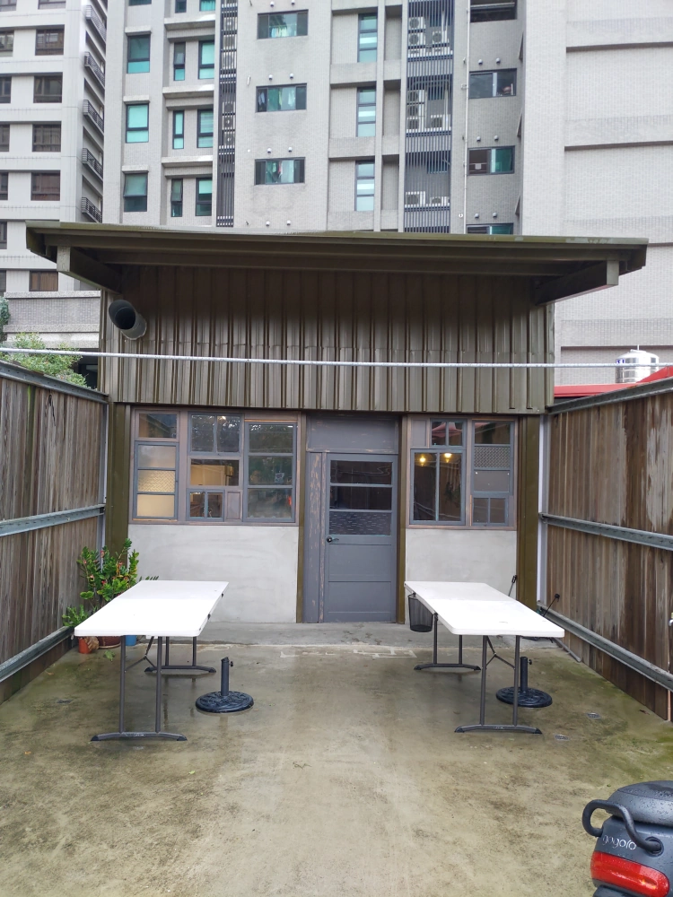
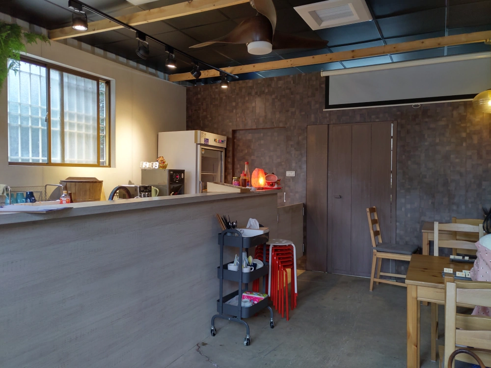
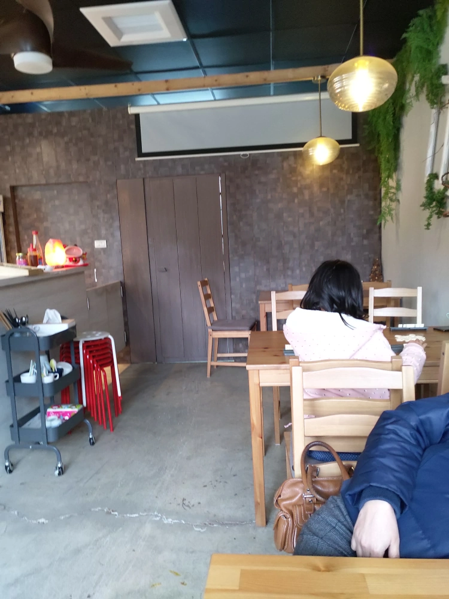
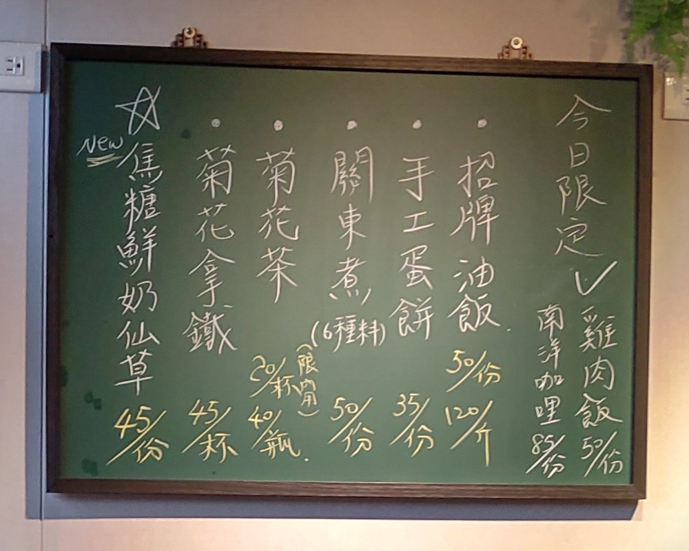
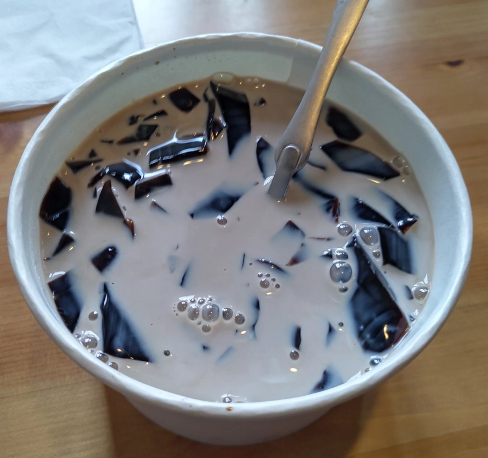
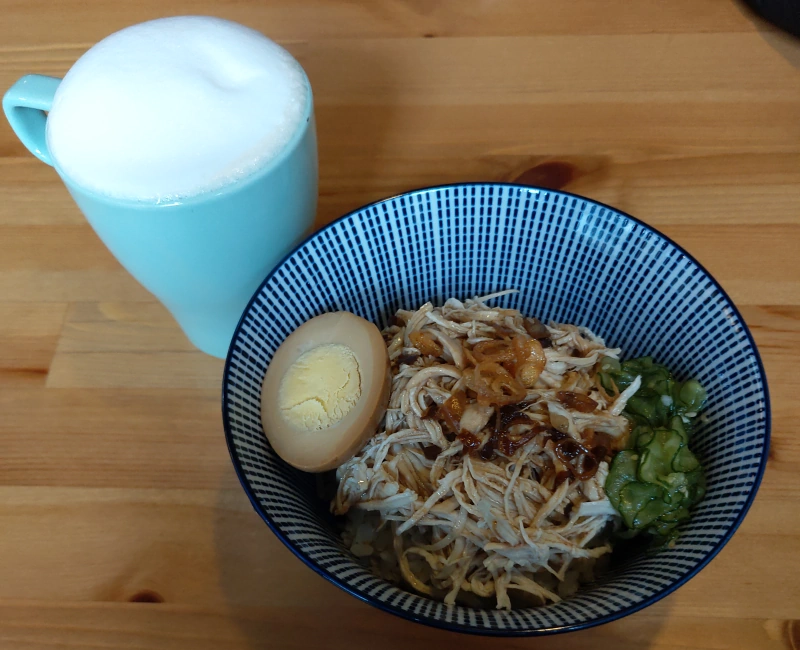
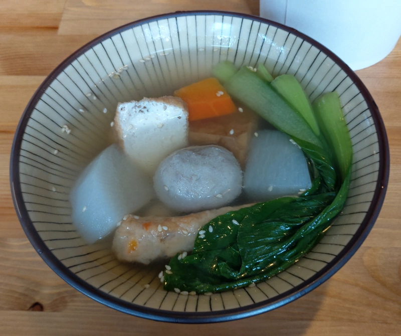
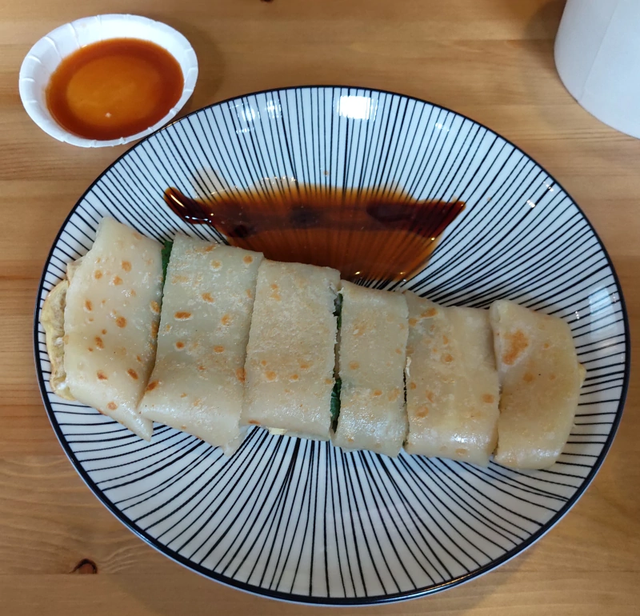
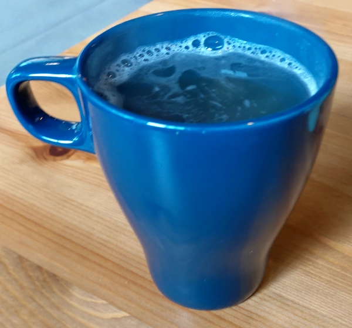

[竹北] 好好吃共享空間
| 餐廳名稱: | 好好吃共享空間 |
|---|---|
| 地 址: | 新竹縣竹北市惟馨街89號 對面 |
| 營業時間: | 週一到週六 11:00~19:00 |
| 週日公休 | |
| 電 話: | 0916 146 087 |
這是一間專心做少數幾樣食物的小吃店，因為專精，所以就優秀了。而且下午有營業，非常適合錯過用餐時段的人。一到這家店發現門口是一個 長走廊，可停三台車。 
靠近大門的景色。 
左手邊是櫃台，右手邊是餐桌。 
餐桌就3張4人桌，用餐區空間沒很大。 
菜單就黑板這幾樣，但是很可惜，很容易缺一兩樣。像這次用餐，就沒油飯、咖哩飯。看他FB ，有了油飯，又沒雞肉飯了。 
焦糖鮮奶仙草，當天天氣冷，這個仙草也不是調的很甜，當天稍微滯銷一點，但感覺用料不錯啦。 
菊花拿鐵 和 雞肉飯。菊花拿鐵 也是感覺用料不錯，還行。雞肉飯則是感覺很好吃，鹹香好味。因為三個人，全部點一輪也不夠吃，馬上加碼一碗。 
關東煮，清淡好料，這道菜太健康了，跟平常街頭常看到的關東煮不一樣，跟期待的重口味關東煮有落差，偶而再點這道菜吧。 
蛋餅，一樣是走健康路線，但味道還能接受，也有提供辣椒醬、醬油膏。這道菜 一樣有加碼一份，不然不夠吃。 
吃到這裡，覺得渴了，乾脆點一杯菊花茶。其實這幾年，很討厭奶泡了，實在搞不懂 拿鐵咖啡的奶泡有啥好喝的，已經都直接點美式咖啡了。 菊花拿鐵 一樣一堆奶泡，菊花茶就單純多了，菊花的味道也很濃郁。 
好好吃共享空間 是一間優秀的小店，品項不多，可是非用餐時段有營業，以後星期六應該很容易在非用餐時段跑過來享用他的餐點。